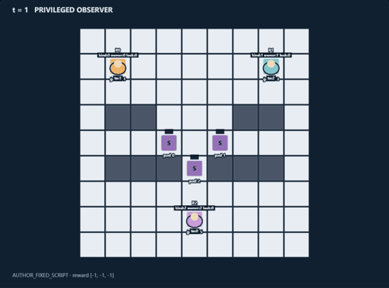
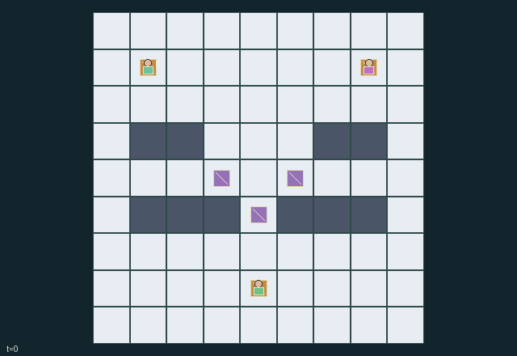

GI100 · Three Quays

Original recording scope: 原回放视角 · Mode: 固定脚本演示
Additional generated state replay (different trajectory / full-state debug)

Each merchant needs two units of its required kind at its own depot. Initially nobody owns the kind they need. Negotiate through visible recipient quotes, physical deposits, conditional cycles or unsecured gifts, then transport the newly owned goods.
Identity and original contract
3 independently actionable roles; 10 discrete commands per role; 104 native observation columns per role; original horizon 120 steps. Declared per-step reward range: -1 to 12. Observation regime: fully_observable.
Source SHA-256: 75b5f4dac757265e7743226b2f47873f4d574b063eb4c68dec0e0e105e548ab5
The objective, rewards, population, map and horizon remain original. A preview is not a success claim.
Objective and gameplay
Each merchant needs two units of its required kind at its own depot. Initially nobody owns the kind they need. Negotiate through visible recipient quotes, physical deposits, conditional cycles or unsecured gifts, then transport the newly owned goods.
Ownership, carrier, commitment, recipient and lock timer belong to each physical good. Whole compatible bilateral or three-party cycles transfer title only after all offers mature. Goods stay on the seller's actual pad after settlement and must be fetched. Withdrawing before settlement prevents the whole dependent cycle; gifts bypass that protection and can be claimed or withheld. Merchants compete for occupied corridor cells and finite time.
- Each merchant initially owns goods that another merchant needs.
- Carry one owned or publicly gifted good at a time through the shared corridors.
- Deposit cargo on your own escrow pad and commit to a visible recipient for three ticks.
- A compatible complete two-party or three-party cycle transfers ownership only after every offer matures.
- Settled cargo stays at its real pad. Its new owner must collect and deliver it.
- Mature offers can be withdrawn at the seller's pad; public gifts can be claimed without a reciprocal promise.
Ending: Every merchant has delivered two required-kind goods. Otherwise truncate at 120 steps. A natural completion on step 120 takes priority. Terminal raw state is absorbing.
What this game explores
Information, sensing & communication: Who knows a fact, when it was measured, and whether it was communicated are separate state variables. Test memory or communication using only the same role-visible evidence.
Commitment, exchange & governance: Promises consume time, liquidity, access or material. Separate an announced agreement from a binding commitment and from its eventual delivery; log cancellation and expiry too.
Joint transport & shared access: Positions, load geometry, occupancy and persistent access constrain whose action can succeed next. Distinguish physical handoff, shared controls and simultaneous force from a cosmetic cooperation label.
These are questions supported by rule structure, not observed learning effects.
Play it: operating walkthrough
crucibles play --game gi100Keep Python running and open its printed address. Select this game, set a seed and press Create session. The game itself is always English.
Assign a role range to Host with Assign / take over, or Assign all roles. Invite a second participant with Create player invitation, then assign a disjoint subset. Every original role is available.
For every owned role choose a legal command and press Queue. Arrow keys / WASD queue a declared directional action for the current role camera when available. Space or Advance one joint step advances everyone together. Non-directional games use the selectors.
Unqueued roles use the labelled untrained uniform-legal policy. Take over or release roles before the next step without resetting. Full-state debug is privileged and permanently logged; role cameras preserve permissions. Close the session to retain logs. Server restart does not restore sessions.
Complete command reference
IDs and English labels exactly match the manifest. Availability depends on role, resources, location and phase. An available action can still have no productive effect.
0·Wait
1·Move north
2·Move east
3·Move south
4·Move west
5·Lift owned or gifted cargo; if carrying, fulfil own depot or drop
6·Commit carried cargo at own escrow pad for three ticks
7·Toggle next-offer recipient between the two other merchants; unavailable while committed
8·Withdraw own mature offer while at own pad
9·Drop carried cargo as a public gift that any merchant may claim
Roles and capability identifiers
These original role names describe capabilities, not interchangeable skins. Check each owned role's legal selector before planning handoffs.
agent_0·West merchant; owns kind 0 initially and needs kind 2
agent_1·East merchant; owns kind 1 initially and needs kind 0
agent_2·South merchant; owns kind 2 initially and needs kind 1
Information and observation permissions
All cargo positions, ownership, carriers, escrow commitments, timers, quotes, depot needs and event flags are public. Every entity visibility mask is true. The static walls and pad/depot geometry are public. No text messages or extra renderer-only policy information exist.
The GIF is full-state debug and may reveal hidden entities or private state. Train on obs[agent], not the picture, state tree or another role's private row. Field slices and visibility are in the original manifest.
Reinforcement-learning integration
import jax
from crucibles_jaxmarl import make
env = make("gi100")
key = jax.random.PRNGKey(0)
key, rk, ak, sk = jax.random.split(key, 4)
obs, state = jax.jit(env.reset)(rk)
actions = env.sample_actions(ak, state)
obs, state, rewards, dones, info = jax.jit(env.step_env)(sk, state, actions)
done = dones["__all__"]Observations are float32 vectors of width 104; actions are scalar int32; masks have 10 entries. Supply all 3 roles each transition. Masked sampling is an engineering reference, not a trained learner.
step_env retains terminal data without reset. step performs outer autoreset and keeps terminal data in info["raw_state"] and info["raw_observation"]. Use dones["__all__"] for episode boundaries; separate completion, failure and time limit in analysis.
JIT or vmap equal identities and shapes. Split independent reset, policy and transition keys. Group different shapes explicitly; do not shrink the population or horizon. Host rendering stays outside training.
Training questions and fair evaluation
Define valid completion from the objective before fitting. Preserve original rewards and also report real deliveries/services, losses, resource state, unresolved episodes and per-role returns. Animation is not a reward signal.
Who knows a fact, when it was measured, and whether it was communicated are separate state variables. Test memory or communication using only the same role-visible evidence.
Promises consume time, liquidity, access or material. Separate an announced agreement from a binding commitment and from its eventual delivery; log cancellation and expiry too.
Positions, load geometry, occupancy and persistent access constrain whose action can succeed next. Distinguish physical handoff, shared controls and simultaneous force from a cosmetic cooperation label.
Compare memory, communication or centralized critics under matched actor information. Declare critic access; keep actor inputs role-filtered. Match partner/opponent distributions, masks, compute and checkpoint selection. Final tests never enter fitting or selection.
Independent training runs or source-pairing blocks are inferential units; episodes from one policy are not independent training replications. Save hashes, keys, versions, device, time and cost. Negative, zero, failed and indeterminate outcomes are valid. No trained checkpoint or target score is supplied.
Classification and evidence
Overlapping editorial labels are reading aids, not proof of novelty, difficulty, strategic equivalence or learning effects.
- Information, sensing & communication
- Evidence
manifest.task.observation_access: All cargo positions, ownership, carriers, escrow commitments, timers, quotes, depot needs and event flags are public. Every entity visibility mask is true. The static walls and pad/depot geometry are public. No text messages or extra renderer-only policy information exist.
- Commitment, exchange & governance
- Evidence
manifest.task.objective: Each merchant needs two units of its required kind at its own depot. Initially nobody owns the kind they need. Negotiate through visible recipient quotes, physical deposits, conditional cycles or unsecured gifts, then transport the newly owned goods.
- Evidence
manifest.task.interaction: Ownership, carrier, commitment, recipient and lock timer belong to each physical good. Whole compatible bilateral or three-party cycles transfer title only after all offers mature. Goods stay on the seller's actual pad after settlement and must be fetched. Withdrawing before settlement prevents the whole dependent cycle; gifts bypass that protection and can be claimed or withheld. Merchants compete for occupied corridor cells and finite time.
- Evidence
manifest.task.observation_access: All cargo positions, ownership, carriers, escrow commitments, timers, quotes, depot needs and event flags are public. Every entity visibility mask is true. The static walls and pad/depot geometry are public. No text messages or extra renderer-only policy information exist.
- Joint transport & shared access
- Evidence
manifest.task.objective: Each merchant needs two units of its required kind at its own depot. Initially nobody owns the kind they need. Negotiate through visible recipient quotes, physical deposits, conditional cycles or unsecured gifts, then transport the newly owned goods.
- Evidence
manifest.task.interaction: Ownership, carrier, commitment, recipient and lock timer belong to each physical good. Whole compatible bilateral or three-party cycles transfer title only after all offers mature. Goods stay on the seller's actual pad after settlement and must be fetched. Withdrawing before settlement prevents the whole dependent cycle; gifts bypass that protection and can be claimed or withheld. Merchants compete for occupied corridor cells and finite time.
- Evidence
manifest.task.observation_access: All cargo positions, ownership, carriers, escrow commitments, timers, quotes, depot needs and event flags are public. Every entity visibility mask is true. The static walls and pad/depot geometry are public. No text messages or extra renderer-only policy information exist.
Source, receipts and preview limits
The additional generated state GIF replays saved untrained legal actions through the original kernel. At most 25 actual endpoints include initial and terminal state; no invented interpolation. It is full-state debug, not the role observation. Where an original scene preview exists, it is displayed first with its own recorded information scope. The two recordings may use different trajectories and views.
Original source, observation slices, manifest and mechanism
Native receipt · Presentation receipt
Engineering passes do not establish learning. Nonzero floating differences remain recorded and undetermined; no new tolerance was introduced. Human scores remain unverified.